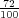
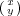
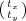

PGF has a powerful transformation mechanism that is similar to the transformation capabilities of METAFONT. The
present section explains how you can access it in TikZ.
13.1 The Different Coordinate Systems
It is a long process from a coordinate like, say, (1,2) or (1cm,5mathrmpt), to the position a point is finally placed
on the display or paper. In order to find out where the point should go, it is constantly “transformed,”
which means that it is mostly shifted around and possibly rotated, slanted, scaled, and otherwise
mutilated.
In detail, (at least) the following transformations are applied to a coordinate like (1,2) before a point on the
screen is chosen:
PGF interprets a coordinate like (1,2) in its xy-coordinate system as “add the current x-vector once
and the current y-vector twice to obtain the new point.”
PGF applies its coordinate transformation matrix to the resulting coordinate. This yields the final
position of the point inside the picture.
The backend driver (like dvips or pdftex) adds transformation commands such the coordinate is
shifted to the correct position in TEX’s page coordinate system.
PDF (or PostScript) apply the canvas transformation matrix to the point, which can once more change
the position on the page.
The viewer application or the printer applies the device transformation matrix to transform the
coordinate to its final pixel coordinate on the screen or paper.
In reality, the process is even more involved, but the above should give the idea: A point is constantly
transformed by changes of the coordinate system.
In TikZ, you only have access to the first two coordinate systems: The xy-coordinate system and the coordinate
transformation matrix (these will be explained later). PGF also allows you to change the canvas transformation
matrix, but you have to use commands of the core layer directly to do so and you “better know what you
are doing” when you do this. The moment you start modifying the canvas matrix, PGF immediately
looses track of all coordinates and shapes, anchors, and bounding box computations will no longer
work.
13.2 The Xy- and Xyz-Coordinate Systems
The first and easiest coordinate systems are PGF’s xy- and xyz-coordinate systems. The idea is very simple:
Whenever you specify a coordinate like (2,3) this means 2vx + 3vy, where vx is the current x-vector and vy is the
current y-vector. Similarly, the coordinate (1,2,3) means vx + 2vy + 3vz.
Unlike other packages, PGF does not insist that vx actually has a y-component of 0, that is, that it is a
horizontal vector. Instead, the x-vector can point anywhere you want. Naturally, normally you will want the
x-vector to point horizontally.
One undesirable effect of this flexibility is that it is not possible to provide mixed coordinates as in (1,2pt). Life
is hard.
To change the x-, y-, and z-vectors, you can use the following options:
x=<dimension> Sets the x-vector of PGF’s xyz-coordinate system to point <dimension> to the right,
that is, to (<dimension>,0pt). The default is 1cm.
The last example shows that the size of steppings in grids, just like all other dimensions, are not affected by
the x-vector. After all, the x-vector is only used to determine the coordinate of the upper right corner of the
grid.
x=<coordinate> Sets the x-vector of PGF’s xyz-coordinate system to the specified <coordinate>. If <coordinate>
contains a comma, it must be put in braces.
PGF and TikZ allow you to specify coordinate transformations. Whenever you specify a coordinate as in (1,0) or
(1cm,1pt) or (30:2cm), this coordinate is first “reduced” to a position of the form “x points to the right and y
points upwards.” For example, (1in,5pt) is reduced to “72 points to the right and 5 points upwards” and
(90:100pt) means “0pt to the right and 100 points upwards.”
The next step is to apply the current coordinate transformation matrix to the coordinate. For example, the
coordinate transformation matrix might currently be set such that it adds a certain constant to the x value. Also, it
might be setup such that it, say, exchanges the x and y value. In general, any “standard” transformation like
translation, rotation, slanting, or scaling or any combination thereof is possible. (Internally, PGF keeps
track of a coordinate transformation matrix very much like the concatenation matrix used by PDF or
PostScript.)
The most important aspect of the coordinate transformation matrix is that it applies to coordinatesonly! In particular, the coordinate transformation has no effect on things like the line width or the
dash pattern or the shading angle. In certain cases, it is not immediately clear whether the coordinate
transformation matrix should apply to a certain dimension. For example, should the coordinate transformation
matrix apply to grids? (It does.) And what about the size of arced corners? (It does not.) The general
rule is “If there is no ‘coordinate’ involved, even ‘indirectly,’ the matrix is not applied.” However,
sometimes, you simply have to try or look it up in the documentation whether the matrix will be
applied.
Setting the matrix cannot be done directly. Rather, all you can do is to “add” another transformation to the
current matrix. However, all transformations are local to the current TEX-group. All transformations are added
using graphic options, which are described below.
Transformations apply immediately when they are encountered “in the middle of a path” and they apply only to
the coordinates on the path following the transformation option.
A final word of warning: You should refrain from using “aggressive” transformations like a scaling of a factor of
10000. The reason is that all transformations are done using TEX, which has a fairly low accuracy. Furthermore, in
certain situations it is necessary that TikZ inverts the current transformation matrix and this will fail if the
transformation matrix is badly conditioned or even singular (if you do not know what singular matrices are, you are
blessed).
shift={<coordinate>} adds the <coordinate> to all coordinates.
cm={<a>,<b>,<c>,<d>,<coordinate>} applies the following transformation to all coordinates: Let (x,y) be the
coordinate to be transformed and let <coordinate> specify the point (tx,ty). Then the new coordinate is given
by  + . Usually, you do not use this option directly.
reset cm completely resets the coordinate transformation matrix to the identity matrix. This will destroy not
only the transformations applied in the current scope, but also all transformations inherited from surrounding
scopes. Do not use this option.